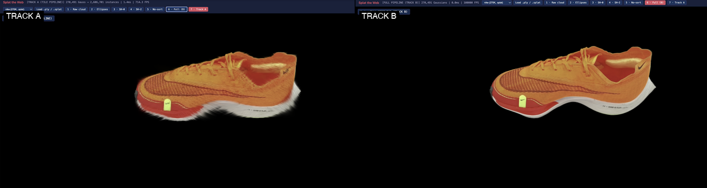
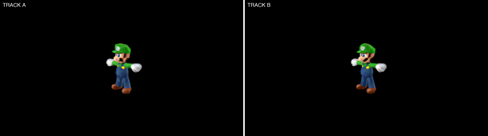

3D Gaussian Splatting (Kerbl et al., SIGGRAPH 2023) represents a 3D scene as millions of Gaussians with view-dependent color, and renders them in real time by projecting each one to screen and blending them front-to-back. The paper's reference renderer runs in CUDA, and its design takes advantage of CUDA-only features: a fast atomics-based radix sort, custom rasterizer kernels, and effectively unlimited GPU memory. We built a WebGPU implementation from scratch over four weeks, using two different methods. Track A is our implementation of the paper's tile pipeline, built using WebGPU which lacks a built-in radix sort and has weak support for atomics. Track B is an alternative inspired by EPFL CVLab's WebGPU port: it skips the tiling and lets the GPU's hardware alpha blender do the compositing. Comparing them validates the Kerbl paper's design empirically: on the 6 million Gaussian Mip-NeRF 360 scenes, Track A is 12.7× faster than Track B (20 vs 1.6 FPS at 1080p), because Track A's per-tile sorting evades the global-sort bottleneck that dominates Track B at scale. On smaller scenes, Track B is the faster pipeline because its overhead is lower. We also discovered a Track A specific streak artifact on .splat inputs that does not appear on .ply inputs — something the original paper does not address. A WGSL radix sort is a possible next optimization to close the remaining gap to Kerbl's reported real-time numbers.
The input is a pre-trained scene file: either an INRIA .ply file or a .splat file. For each frame, the renderer (1) projects every Gaussian's 3D position and shape to a 2D ellipse on screen, using EWA splatting (Zwicker et al.) which approximates the projected covariance with a Jacobian; (2) computes view-dependent color from the spherical harmonics; (3) sorts visible Gaussians by depth so closer ones blend on top; and (4) composites them front-to-back using alpha-over blending. Tracks A and B differ in how they handle steps 3 and 4.
Track A creates an implementation based on the Kerbl paper. The screen is divided into 16×16 pixel tiles, and the renderer figures out which tiles each Gaussian's 3-σ bounding ellipse touches. It then sorts pairs by a 32-bit composite key (tile index in the upper 16 bits, depth in the lower 16 bits), so each tile ends up with a contiguous list of its Gaussians sorted front-to-back. A custom compute-shader rasterizer walks each pixel's list, accumulating color and transmittance T using the standard alpha-over recurrence, and stops as soon as T < 1/4096 (the pixel is effectively opaque, so deeper Gaussians cannot contribute). These are the 8 stages of the pipeline: projectTile, prefixSum (3 passes), duplicateKeys, initPadding, bitonicSort, tileRanges, composite, blit. WebGPU made this awkward in three ways. (1) We replaced the paper's atomics-based cub::DeviceRadixSort with a workgroup-parallel bitonic sort because WebGPU has no built-in radix sort. (2) WebGPU caps workgroupCount.x at 65,535, so dispatches over millions of items required 2D grid reshapes. (3) When sort buffers grow past their capacity, all dependent bind groups have to be invalidated, which is a hazard the paper's CUDA implementation does not state.
Track B is inspired by EPFL CVLab, which takes a simpler approach used by most web 3DGS viewers. Each Gaussian becomes a screen-space quad emitted by a vertex shader; all Gaussians are sorted globally by depth in one bitonic sort; then the quads are drawn as instanced geometry with hardware alpha blending enabled. There is no tile binning, no per-pixel early termination, and no custom rasterizer. The GPU's standard alpha blender does the compositing. This is structurally simpler, much easier to debug, and faster on small scenes because there is no tile bookkeeping. Its weakness is that on dense scenes the global sort traffic dominates frame time, and that hardware blending without early termination has no way to skip Gaussians once a pixel is opaque.
We replaced the paper's CUDA cub::DeviceRadixSort with a parallel bitonic sort. Spherical harmonics are evaluated to degree 3 using the canonical CUDA reference signs. Track A and Track B share identical EWA projection math and numerical guards (same 0.3·I covariance low-pass floor, same near-plane cull, same 1e-8 quaternion-length floor) — so any visual divergence between them is localized to the composite stage, not projection.
Benchmark methodology mistake. Our first run showed a 12.7× Track A speedup on bicycle — so big we almost dismissed it. Turns out Track A has a fast path that re-uses the last frame when the camera isn't moving, and our test left the camera still. After adding moving-camera benchmarks, the 12.7× held up (20.0 vs 1.57 FPS). The number was real; we'd gotten the right answer for the wrong reason.
INRIA camera-pose bug. Loading INRIA's cameras.json for the reference comparison tripped us up
twice. We assumed the test cameras were every 8th entry; they were actually the first N. And the rotation matrix is
camera-to-world, even though a comment in the reference code suggested otherwise. Once we fixed both, our output lined up with
INRIA's at every pose.
The cache-hit benchmark and a 0.08 dB SH3-disable test were both useful negative results. They taught us that measurement methodology is a first-class deliverable and that intuition about which optimization will help is unreliable.
A surprising chunk of our time went into stuff that isn't graphics at all — telemetry, benchmark scripts. All of it ended up being necessary. Per-stage GPU timing is what caught the sort bottleneck. The moving-camera bench kept our speedup numbers honest. And a comparator caught a brown-haze artifact in Track A that we'd otherwise have missed.
On the .splat scenes such as the Nike scene, Track A produces visible streak like artifacts that Track B does not. On the INRIA .ply scenes like the Luigi scene, both renderers produce comparable output and the streak like artifact is not present. Our guess is that the .splat format's 8-bit-quantized rotation quaternions produce degenerate 2D covariances after EWA projection, an issue Track A's per-pixel composite shader is sensitive to but Track B's hardware-blend rasterizer is not.


.splat Nike scene and the .ply Luigi scene.All numbers are measured in real Chrome on a MacBook Pro (Apple M-series, ~200 GB/s memory bandwidth) at 1080p with a moving camera (0.5°/frame yaw) and the camera-skip cache disabled. Each measurement averages 8 frames after a warmup discard.
| Scene | N (Gaussians) | Track A FPS | Track B FPS | Bottleneck |
|---|---|---|---|---|
| luigi | 14K | 98.7 | 173 | |
| nike | 270K | ~12* | 278 | |
| plush | 281K | ~7 | 192 | |
| room | 1.6M | 21.1 | 6.4 | |
| bicycle | 6.13M | 20.0 | 1.6 | |
| garden | 5.83M | 21.0 | 1.7 |
Track B is faster on small scenes (≤281K Gaussians) where its lower overhead wins; Track A is dramatically faster on large scenes where its per-tile binning evades the global sort. On bicycle and garden, Track A delivers 12.7× and 12.4× speedups — empirical confirmation that the Kerbl paper's tile-based design is the right architecture at this scale, even through our WebGPU implementation.
graphdeco-inria/gaussian-splatting CUDA reference implementation. github.com/graphdeco-inria/gaussian-splattingKaan Kont — Authored the Track A tile pipeline (eight-pass compute pipeline with bitonic sort and per-pixel front-to-back composite). Built the benchmark harness.
Ben Shamloufard — Authored the Track B pipeline (vertex-shader projection, global sort, hardware alpha blend). Built the CPU reference renderer and the .ply / .splat parsers.
Alex Zhu — Authored spherical harmonics evaluation used by both tracks, camera controls (orbit, WASD, pan), and the HTML viewer with the seven-mode visualization switcher and live telemetry overlay.